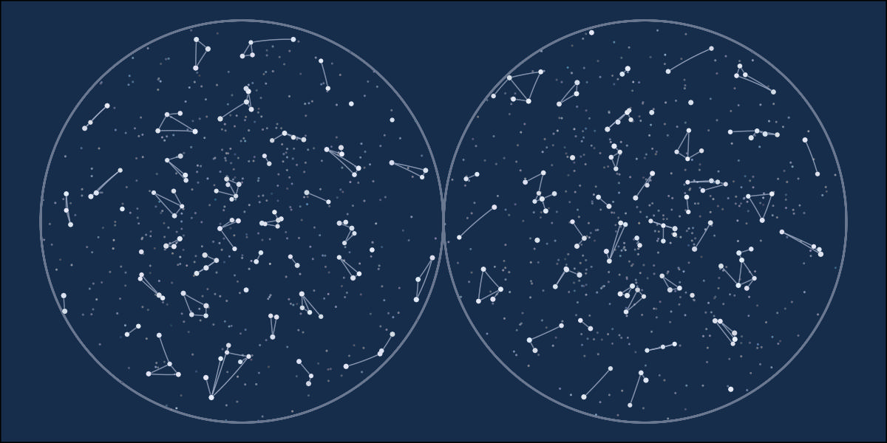
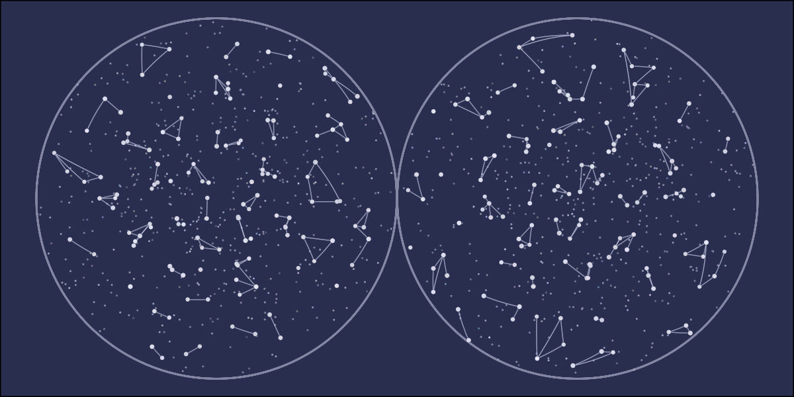
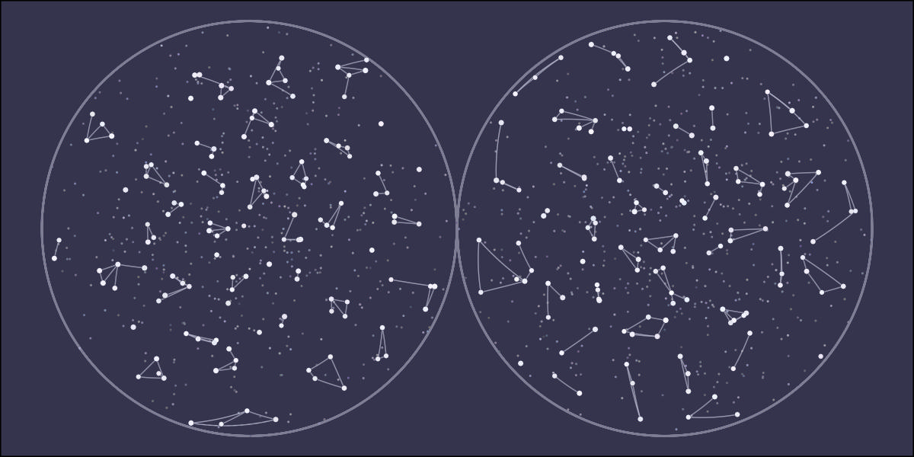
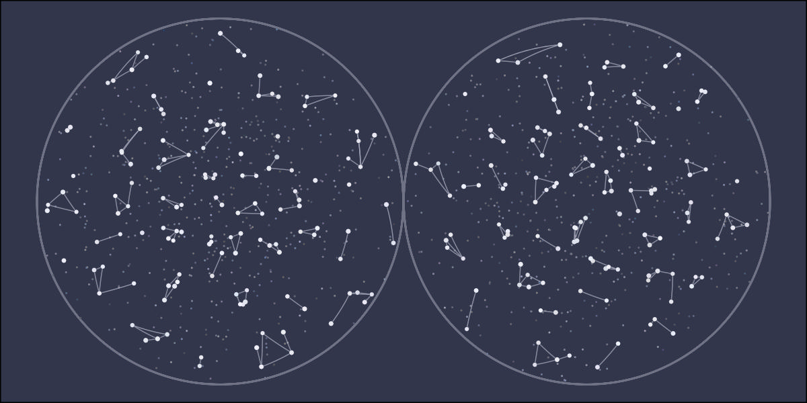
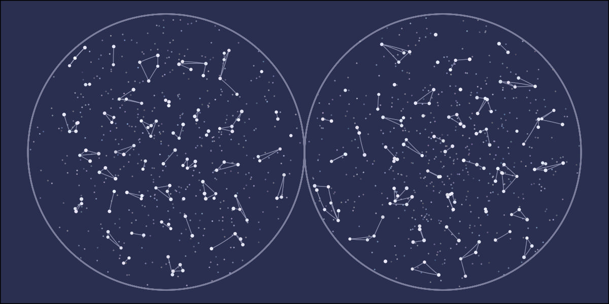

library(tidyverse)
# df needs:
# x, y, z on unit sphere
projection <- function(df) {
df <- df %>%
mutate(lat = asin(z),
long = atan2(y, x)) %>%
mutate(new_x = if_else(z < 0, x / (1 - z), x / (1 + z) + 2),
new_y = if_else(z < 0, y / (1 - z), y / (1 + z)))
return(df)
}This is a small generative art project based on constellations. The math behind it is pretty neat because it uses points on a sphere then projects to 2D. However, there’s no noticeable difference between this approach and starting from 2D. So I was disappointed in the results compared to the amount of work. I figured I’d go ahead and write this up in case someone else decides to attempt something similar.
The code can be found here. Unfortunately, the code and the outputs are not as polished as I would like. I got tired of the project and decided to wrap it up where it was, but I hope this can be useful.
Setting up the projection function first is crucial because I continuously use it to check the code. I’m using the stereographic projection. This projection will graph both hemispheres as big circles. I tried Nicolosi globular projection but found the lines curved too much. I also tried gnomonic projection since all great circles are straight lines, but it doesn’t graph the whole hemisphere nicely. Stereographic is an excellent compromise, but I wish all the lines connecting the stars were straight.
To set the stars and constellation centers, I used Mitchell’s best candidate algorithm for the disk sampling method. This algorithm will space out points without putting any too close together. The code starts with one random point on the unit sphere, creates candidates_n new points, finds the one farthest away from the previously drawn point, and accepts it if it’s past the distance_limit from the already selected point. Then, for the following points_n times, random points are drawn, compared, and possibly selected. The function can return fewer than points_n points if either the points_n or distance_limit is too large.
# points_n, approx. number of final points
# candidates_n, number of attempts per point
# distance_limit, minimum distance between points
disk_sampling <- function(points_n, candidates_n, distance_limit) {
df <- tibble(
x = c(rnorm(1), rep(0, points_n - 1)),
y = c(rnorm(1), rep(0, points_n - 1)),
z = c(rnorm(1), rep(0, points_n - 1))
) %>%
mutate(normalize = sqrt(x^2 + y^2 + z^2)) %>%
mutate(normalize = if_else(normalize == 0, 1, normalize)) %>%
mutate(x = x / normalize,
y = y / normalize,
z = z / normalize) %>%
select(-normalize) %>%
rowid_to_column("id")
for(i in seq(2, points_n)) {
candidates <- tibble(
can_x = rnorm(candidates_n),
can_y = rnorm(candidates_n),
can_z = rnorm(candidates_n)
) %>%
mutate(normalize = sqrt(can_x^2 + can_y^2 + can_z^2)) %>%
mutate(can_x = can_x / normalize,
can_y = can_y / normalize,
can_z = can_z / normalize) %>%
select(-normalize) %>%
rowid_to_column("can_id")
best_candidate <- df %>%
filter(x != 0 | y != 0 | z != 0) %>%
expand_grid(candidates) %>%
mutate(distance = acos(x * can_x +
y * can_y +
z * can_z)) %>%
group_by(can_id) %>%
summarise(distance = min(distance)) %>%
filter(distance == max(distance)) %>%
filter(distance > distance_limit) %>%
slice(1) %>%
pull(can_id)
if(length(best_candidate) > 0) {
best_candidate <- candidates %>%
filter(can_id == best_candidate) %>%
mutate(can_id = i) %>%
rename_with(~ gsub("can_", "", .x))
df <- df %>%
rows_update(best_candidate, by = "id")
}
}
df <- df %>%
filter(x != 0 | y != 0 | z != 0)
return(df)
}The following function chooses the lines that connect the stars for a single constellation. All of the lines are great circles on the unit sphere. That changes the math from typical line intersections. I don’t want any of the lines to cross. So we’ll first list out all the intersections. Then we’ll select one star at random and pull one of the lines connected to that star. I want higher probabilities on shorter lines. So the selection is weighted by the inverse of the line length. We’ll use the intersection list we previously found to avoid line crossing by removing any crossing lines from future selection. Then, we select the next star and repeat until all stars are connected.
# df needs x, y, z
connections <- function(df) {
lines <- data.frame(
line_id_1_2 = integer(),
id_2 = integer(),
id_1 = integer(),
x_2 = numeric(),
x_1 = numeric(),
y_2 = numeric(),
y_1 = numeric(),
z_2 = numeric(),
z_1 = numeric()
)
if(nrow(df) <= 1) {
return(lines)
}
connections <- df %>%
select(starts_with("star")) %>%
rename_with(~ paste0(gsub("star_", "", .x), "_1")) %>%
select(id_1, x_1, y_1, z_1)
connections <- connections %>%
rename_with(~ paste0(gsub("1", "", .x), "2")) %>%
expand_grid(connections) %>%
filter(id_1 < id_2) %>%
mutate(a_1_2 = y_1 * z_2 - z_1 * y_2,
b_1_2 = z_1 * x_2 - x_1 * z_2,
c_1_2 = x_1 * y_2 - y_1 * x_2) %>%
rowid_to_column("line_id_1_2")
# https://blog.mbedded.ninja/mathematics/geometry/spherical-geometry/finding-the-intersection-of-two-arcs-that-lie-on-a-sphere/
# https://www.dirkbertels.net/computing/greatCircles_files/great_circles_070206.pdf
intersections <- connections %>%
rename_with(~ gsub("1", "3", .x)) %>%
rename_with(~ gsub("2", "4", .x)) %>%
expand_grid(connections) %>%
filter(line_id_1_2 < line_id_3_4) %>%
filter((id_1 != id_3 & id_1 != id_4) &
(id_2 != id_3 & id_2 != id_4)) %>% # remove ones that share a star
mutate(l_1 = b_1_2 * c_3_4 - c_1_2 * b_3_4,
m_1 = c_1_2 * a_3_4 - a_1_2 * c_3_4,
n_1 = a_1_2 * b_3_4 - b_1_2 * a_3_4) %>%
mutate(normal = sqrt(l_1^2 + m_1^2 + n_1^2)) %>%
mutate(l_1 = l_1 / normal,
m_1 = m_1 / normal,
n_1 = n_1 / normal) %>%
mutate(l_2 = -l_1,
m_2 = -m_1,
n_2 = -n_1) %>%
mutate(normal_1 = sqrt(x_1^2 + y_1^2 + z_1^2),
normal_2 = sqrt(x_2^2 + y_2^2 + z_2^2),
normal_3 = sqrt(x_3^2 + y_3^2 + z_3^2),
normal_4 = sqrt(x_4^2 + y_4^2 + z_4^2),
normal_l_1 = sqrt(l_1^2 + m_1^2 + n_1^2),
normal_l_2 = sqrt(l_2^2 + m_2^2 + n_2^2)) %>% # technically, all 1's
mutate(angle_1_l_1 = acos(round((x_1 * l_1 + y_1 * m_1 + z_1 * n_1) /
(normal_1 * normal_l_1), 7)) * 180/pi,
angle_l_1_2 = acos(round((x_2 * l_1 + y_2 * m_1 + z_2 * n_1) /
(normal_2 * normal_l_1), 7)) * 180/pi,
angle_1_l_2 = acos(round((x_1 * l_2 + y_1 * m_2 + z_1 * n_2) /
(normal_1 * normal_l_2), 7)) * 180/pi,
angle_l_2_2 = acos(round((x_2 * l_2 + y_2 * m_2 + z_2 * n_2) /
(normal_2 * normal_l_2), 7)) * 180/pi,
angle_1_2 = acos(round((x_1 * x_2 + y_1 * y_2 + z_1 * z_2) /
(normal_1 * normal_2), 7)) * 180/pi,
angle_3_l_1 = acos(round((x_3 * l_1 + y_3 * m_1 + z_3 * n_1) /
(normal_3 * normal_l_1), 7)) * 180/pi,
angle_l_1_4 = acos(round((x_4 * l_1 + y_4 * m_1 + z_4 * n_1) /
(normal_4 * normal_l_1), 7)) * 180/pi,
angle_3_l_2 = acos(round((x_3 * l_2 + y_3 * m_2 + z_3 * n_2) /
(normal_3 * normal_l_2), 7)) * 180/pi,
angle_l_2_4 = acos(round((x_4 * l_2 + y_4 * m_2 + z_4 * n_2) /
(normal_4 * normal_l_2), 7)) * 180/pi,
angle_3_4 = acos(round((x_3 * x_4 + y_3 * y_4 + z_3 * z_4) /
(normal_3 * normal_4), 7)) * 180/pi) %>%
mutate(sum_angle_1_l_1_2 = angle_1_l_1 + angle_l_1_2,
sum_angle_1_l_2_2 = angle_1_l_2 + angle_l_2_2,
sum_angle_3_l_1_4 = angle_3_l_1 + angle_l_1_4,
sum_angle_3_l_2_4 = angle_3_l_2 + angle_l_2_4) %>%
mutate(on_segment_1_l_1_2 =
if_else(abs(sum_angle_1_l_1_2 - angle_1_2) < .001, 1, 0),
on_segment_1_l_2_2 =
if_else(abs(sum_angle_1_l_2_2 - angle_1_2) < .001, 1, 0),
on_segment_3_l_1_4 =
if_else(abs(sum_angle_3_l_1_4 - angle_3_4) < .001, 1, 0),
on_segment_3_l_2_4 =
if_else(abs(sum_angle_3_l_2_4 - angle_3_4) < .001, 1, 0)) %>%
mutate(intersects = if_else((on_segment_1_l_1_2 == 1 & on_segment_3_l_1_4) |
(on_segment_1_l_2_2 == 1 & on_segment_3_l_2_4),
1, 0)) %>%
filter(intersects == 1)
## Loop through adding one at a time
star_list <- df %>%
arrange(sample(1:n(), n())) %>%
pull(star_id)
for(i in seq(1, length(star_list))) {
current_star <- star_list[i]
potential_lines <- connections %>%
filter(id_1 == current_star | id_2 == current_star) %>%
anti_join(lines, by = "line_id_1_2")
# remove intersections
limit_lines <- intersections %>%
select(line_id_1_2, line_id_3_4)
limit_lines <- intersections %>%
select(line_id_1_2, line_id_3_4) %>%
rename(line_id_1_2 = line_id_3_4,
line_id_3_4 = line_id_1_2) %>%
rbind(limit_lines) %>%
inner_join(lines, by = "line_id_1_2")
limit_lines <- limit_lines %>%
select(line_id_1_2, line_id_3_4)
limit_lines <- limit_lines %>%
select(line_id_1_2, line_id_3_4) %>%
rename(line_id_1_2 = line_id_3_4,
line_id_3_4 = line_id_1_2) %>%
rbind(limit_lines)
potential_lines <- potential_lines %>%
anti_join(limit_lines, by = c("line_id_1_2"))
if(nrow(potential_lines) > 0) {
lines <- potential_lines %>%
mutate(weight = acos(x_1*x_2 +
y_1 * y_2 +
z_1 * z_2)) %>%
sample_n(1, weight = 1/weight) %>% # add weights here
select(-weight) %>%
rbind(lines)
}
}
lines <- lines %>%
select(-a_1_2, -b_1_2, -c_1_2)
return(lines)
}For the sky, we’ll start with 88 constellation centers using the disk sampling method. For the stars, we’ll set up eight sets of 33 stars. Each set of 33 stars is spaced nicely, while having eight groups adds a little noise.
constellations <- disk_sampling(88, 25, .01) %>%
select(-id) %>%
rowid_to_column("id") %>%
rename_with(~ paste0("constellation_", .x))
# 88 * 3
# 264 / 8 = 33
stars <- rbind(disk_sampling(33, 25, .01),
disk_sampling(33, 25, .01),
disk_sampling(33, 25, .01),
disk_sampling(33, 25, .01),
disk_sampling(33, 25, .01),
disk_sampling(33, 25, .01),
disk_sampling(33, 25, .01),
disk_sampling(33, 25, .01)) %>%
select(-id) %>%
rowid_to_column("id") %>%
rename_with(~ paste0("star_", .x))We’ll find the closest star to each constellation center and combine them. Checking that they don’t cross over from one hemisphere to the other keeps the constellation in only one of the big circles after projecting. We’ll move each star a little closer to the constellation center to create a bit more distance between the constellations.
sky <- constellations %>%
expand_grid(stars) %>%
mutate(distance = acos(constellation_x * star_x +
constellation_y * star_y +
constellation_z * star_z)) %>%
filter(sign(star_z) == sign(constellation_z)) %>% # make sure they cross over line
group_by(star_id) %>%
filter(distance == min(distance))
# https://math.stackexchange.com/questions/2375102/parametric-equation-of-a-circle-in-3d-given-center-and-two-points-on-the-circle
move_percentage <- .25
star_movement <- sky %>%
mutate(normal_x = star_y * constellation_z - star_z * constellation_y,
normal_y = star_z * constellation_x - star_x * constellation_z,
normal_z = star_x * constellation_y - star_y * constellation_x,
interior = star_x * constellation_x +
star_y * constellation_y +
star_z * constellation_z) %>%
mutate(normal_norm = sqrt(normal_x^2 + normal_y^2 + normal_z^2)) %>%
mutate(normal_x = normal_x / normal_norm,
normal_y = normal_y / normal_norm,
normal_z = normal_z / normal_norm) %>%
mutate(angle = acos(interior) * move_percentage,
perp_x = normal_y * star_z - normal_z * star_y,
perp_y = normal_z * star_x - normal_x * star_z,
perp_z = normal_x * star_y - normal_y * star_x) %>%
mutate(perp_norm = sqrt(perp_x^2 + perp_y^2 + perp_z^2)) %>%
mutate(perp_x = perp_x / perp_norm,
perp_y = perp_y / perp_norm,
perp_z = perp_z / perp_norm) %>%
mutate(star_x = cos(angle) * star_x + sin(angle) * perp_x,
star_y = cos(angle) * star_y + sin(angle) * perp_y,
star_z = cos(angle) * star_z + sin(angle) * perp_z)
star_movement <- star_movement %>%
select(star_id, star_x, star_y, star_z) %>%
rename_with(~ gsub("star_", "", .x)) %>%
rename_with(~ paste0("star_", .x))
sky <- sky %>%
rows_update(star_movement, by = "star_id")
sky <- sky %>%
select(-distance) %>%
rownames_to_column("row") %>%
pivot_longer(cols = -row,
names_to = c("object", ".value"),
names_sep = "_") %>%
projection() %>%
pivot_wider(id_cols = row,
names_from = object,
names_glue = "{object}_{.value}",
values_from = c(id, x, y, z, lat, long,
new_x, new_y)) %>%
select(-row)Now that we have the stars in their final positions and set to a constellation, we can add the lines.
lines <- sky %>%
select(constellation_id, star_id,
star_x, star_y, star_z) %>%
nest(data = c(star_id, star_x, star_y, star_z)) %>%
mutate(data = map(data, connections)) %>%
unnest(data)
lines <- lines %>%
pivot_longer(-c(constellation_id, line_id_1_2),
names_to = c(".value", "star"),
names_sep = "_") %>%
projection() %>%
pivot_wider(id_cols = c(constellation_id, line_id_1_2),
names_from = star,
values_from = c(id, x, y, z, lat, long,
new_x, new_y))
# https://math.stackexchange.com/questions/383711/parametric-equation-for-great-circle
curves <- lines %>%
expand_grid(f = seq(0, 1, length.out = 100)) %>%
mutate(d = acos(sin(lat_1) * sin(lat_2) + cos(lat_1) * cos(lat_2) * cos(long_1 - long_2))) %>%
mutate(A = sin((1 - f) * d) / sin(d),
B = sin(f * d) / sin(d)) %>%
mutate(x = A * cos(lat_1) * cos(long_1) + B * cos(lat_2) * cos(long_2),
y = A * cos(lat_1) * sin(long_1) + B * cos(lat_2) * sin(long_2),
z = A * sin(lat_1) + B * sin(lat_2)) %>%
select(constellation_id, line_id_1_2, x, y, z) %>%
projection() %>%
group_by(constellation_id, line_id_1_2) %>%
mutate(next_new_x = lead(new_x),
next_new_y = lead(new_y)) %>%
filter(!is.na(next_new_x))The last part adds some background stars, the outline circles, and randomizes the features a little bit.
base_hue <- 260 + rnorm(1, 0, sd = 5)
base_chroma <- 25 + rnorm(1, 0, sd = 3)
dark_luminance <- 25 + rnorm(1, 0, sd = 3)
med_luminance <- 50 + rnorm(1, 0, sd = 3)
light_luminance <- 75 + rnorm(1, 0, sd = 3)
bright_luminance <- 90 + rnorm(1, 0, sd = 3)
background_stars_n <- 1000
background_stars <- tibble(
x = rnorm(background_stars_n),
y = rnorm(background_stars_n),
z = rnorm(background_stars_n)
) %>%
mutate(normalize = sqrt(x^2 + y^2 + z^2)) %>%
mutate(normalize = if_else(normalize == 0, 1, normalize)) %>%
mutate(x = x / normalize,
y = y / normalize,
z = z / normalize) %>%
select(-normalize) %>%
rowid_to_column("id") %>%
projection() %>%
mutate(hue = base_hue + rnorm(n(), 0, sd = 7),
chroma = base_chroma + rnorm(n(), 0, sd = 7),
luminance = med_luminance + rnorm(n(), 0, sd = 7)) %>%
mutate(chroma = if_else(chroma < 0, base_chroma, chroma),
luminance = if_else(luminance < 0 | luminance > 100,
med_luminance, luminance)) %>%
mutate(color_value = hcl(hue, chroma, luminance),
size_value = runif(n(), .25, .5)) %>%
mutate(color_value = if_else(is.na(color_value),
hcl(base_hue, base_chroma, med_luminance),
color_value))
outline_circles <- tibble(
circle_id = rep(c(1, 2), each = 360*2),
x = rep(seq(1, 100, length.out = 360*2), 2),
y = rep(seq(1, 100, length.out = 360*2), 2)
) %>%
mutate(x = cos(x) + 2*(circle_id-1),
y = sin(y)) %>%
group_by(circle_id) %>%
mutate(xend = lead(x),
yend = lead(y)) %>%
filter(!is.na(xend)) %>%
mutate(hue = base_hue,
chroma = base_chroma,
luminance = med_luminance) %>%
mutate(color_value = hcl(hue, chroma, luminance))
sky <- sky %>%
mutate(hue = base_hue + rnorm(n(), 0, sd = 7),
chroma = (base_chroma / 2) + rnorm(n(), 0, sd = 2),
luminance = bright_luminance + rnorm(n(), 0, sd = 2)) %>%
mutate(color_value = hcl(hue, chroma, luminance),
size_value = runif(n(), .5, 2)) %>%
mutate(color_value = if_else(is.na(color_value),
hcl(base_hue, base_chroma, bright_luminance),
color_value))Finally, we graph everything.
ggplot() +
geom_segment(data = outline_circles, aes(x = x, y = y,
xend = xend, yend = yend,
group = circle_id,
color = color_value),
size = .25) +
geom_point(data = background_stars, aes(x = new_x, y = new_y, color = color_value,
size = size_value),
shape = 16) +
geom_segment(data = curves, aes(x = new_x, y = new_y,
xend = next_new_x, yend = next_new_y),
color = hcl(base_hue, base_chroma, light_luminance),
size = .15) +
geom_point(data = sky, aes(x = star_new_x, y = star_new_y,
color = hcl(base_hue, base_chroma, dark_luminance),
size = size_value + 1)) +
geom_point(data = sky, aes(x = star_new_x, y = star_new_y, color = color_value,
size = size_value)) +
scale_color_identity() +
scale_radius(range = c(.01, .25)) +
scale_x_continuous(limits = c(-1, 3)) +
scale_y_continuous(limits = c(-1, 1)) +
coord_equal() +
theme_void() +
theme(plot.background = element_rect(fill = hcl(base_hue, base_chroma, dark_luminance)),
legend.position = "none")Here are the first five images using set.seed(x).




